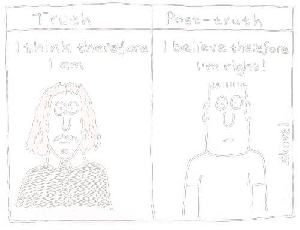
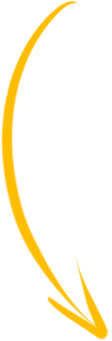

WHEN
WIND
BLOWS

WHEN
WIND
BLOWS
When wind blows,
it blows away lies,
only the truth stands.
When wind blows,
it blows away injustice,
only peace remains.
Let the wind blow.
BACKGROUND
In Jan 27, 2022, a TikTok video of a Chinese mother of eight locked up in a worn-out village shed with a chain around her neck went viral and sparked widespread outrage.
While authorities released a series of conflicting reports and kept official media silent, a blow of ANGRY WIND swept through the social media.
Investigation Report 1 · County Level
After the preliminary investigation verification, the mother got married with Dong in August 1998, and there is no human trafficking. Family members and neighbors reported that Yang often beat children and elderly people for no reason. According to the diagnosis of medical institutions, Yang is suffering from mental illness. At present, she has been treated and her family has been further assisted to ensure a warm Spring Festival. The details are under further investigation and verification.
Fengxian County Publicity Department
Jan 28, 2022
@Xiaoshe Sun
53K followers
Official reports from Fengxian has already overdrawn the credibility of local government. Interest groups are worried that when the “radish” is pull up by public opinions, the “mud” of sloth administration, concealing and lying, together with the blood and tears of local women and children will be revealed. We need a higher-level investigation team to overthrow the local interest network from the outside and bring fair back.
9:15 · Jan 31, 2022

813

13027

141
“
The investigation progress of this incident is largely driven by the public opinions on the Internet. It proved that Internet public opinion has a great amount of positive energy and has become an indispensable part of the driving force for China’s governance progress.
@ Xijin Hu, former chief editor of Global Times

Through this work, I aimed to demonstrate the incomparable strength of public opinion visually, and call for more awareness and actions towards human trafficking and many other social issues alike.
I collected data of 4, 725 posts about this incident on Weibo.
Later, the form of samara seeds will be used to visualize these posts, to see what voices were made during this incident.
This visual metaphor is selected due to its ability to spread and take root as posts on social media, and its representation of freedom.
Each seed glyph encodes 6 attributes of post data.
Click  to see detailed information of encoding rules.
to see detailed information of encoding rules.
And we need wisps of wind to carry these seeds.
I used data of 142 hashtags of this incident on Weibo to visualize the overview of public voices.
Hashtags and posts were both categorized into 8 groups according to which official report they related to. Then I used "windlines" to represent these 8 groups and encode hashtag data.
Click each wisp of wind to explore more. Click to see detailed information of encoding rules.
Now let's move closer, to see seeds carried in these wisps of wind...
WE NEED MORE WIND
The case of this mother of 8 children is not alone. After this TikTok video went viral, another woman in Fengxian was found also locked up, crawling on the ground. Netizens also dug up from news reports that there were many women bodies found in rivers of Fengxian.
And it’s not just in China, human trafficking is an international problem. An estimated 40.3M victims are trapped in modern-day slavery(ILO, 2017). We absolutely need much more awareness, voices and most importantly, actions, towards human trafficking.
This visualization reveals the distribution of human trafficking cases globally. Larger wind glyph indicates more human trafficking cases, thus needing more awareness, public voices and actions.
Hover on wind glyphs and change filter options below to explore more.
(credit: this visualization used data from COUNTER TRAFFICKING DATA COLLABORATIVE)
before 2016
2016
2017
2018
2019
2020
2021
female
male
other/unknown
0 - 17
18 - 29
30 - 38
38+
unknown
restricts movement/medical care
debt bondage
take earnings
threats
psychological abuse
physical/sexual abuse
false promises
psychoactive substances
excessive working hours
withhold necessities/documents
other/unknown
forced labor
sexual exploit
slavery & practices
forced marriage
sex & labour
other/unknown
agriculture
construction
domestic work
manufacturing
hospitality
other/unknown
prostitution
pornography
other/unknown
YEAR
GENDER
AGE
MEANS OF CONTROL
TYPE OF EXPLOIT
TYPE OF LABOUR
TYPE OF SEX
The Great Proletarian Cultural Revolution, the darkest age of Modern China, when millions of people suffered from political persecution
 Post-truth is a time when "objective facts are less influential in shaping public opinion than appeals to emotion and personal belief" (by Oxford dictionaries)
(credit: cartoon from Martin Shovel on Twitter)
REFLECTION
Public Opinion and State Governance Complement Each Other
"We don't have enough to eat". My grandfather spent 10 years in jail simply because he spoke out true condition of their lives.
Today no wonder we live in a society that allows more freedom of speech. Yet we still see authorities censor politically sensitive topics heavily by deleting posts and accounts, banning articles, controlling trendings, etc.
Instead of being afraid of or turning a deaf ear to public voices, the government should embrace them, and make positive changes. Public voice CAN make a difference, it's not just about saving victims of human trafficking, it's about eliminating social injustice and prejudice.
Think Twice of What You Say
Powerful as public voice is, we should remind ourselves not to fall into the trap of post-truth. And let our rationality and conscience guide us, rather than irrational emotion and bias.
DATA & METHODS
This visualization work mainly utilized data of 4,725 posts, 142 hashtags, and over 97,750 victims of human trafficking.
I collected popular posts with the keyword "丰县(fengxian)" and hashtags with over 10k views on Weibo by Python crawler script. You can view the raw data here on my Github page. For posts, I used Baidu open AI platform to predict their text sentiment. Posts and hashtags were both grouped into 8 classes based on which official report they related to.
The data of human trafficking victims are from the counter trafficking data collaborative (the 2021-12-14 version of the global K-anonymized dataset).
To learn more about my design process and tech details, please visit the portfolio page of this project.
This project is for my beloved grandfather,
and others who dare to wield the power of public opinions,
even in the darkest times.


 Hashtag groups
Hashtag groups Investigation reports
Investigation reports Stream graph
Stream graph